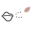
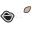

A little breath for the petals.
Pursed lips, a fine dotted breath, and one drifting petal. A static direction for review.


Enlarged artworkActual cursor size · 32 × 32
The proposed gesture: a soft breath gently pushes a nearby petal in the direction the lips face.